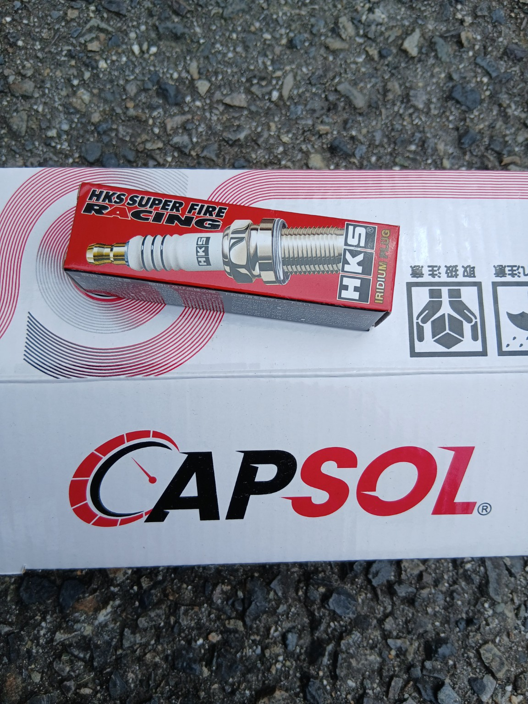
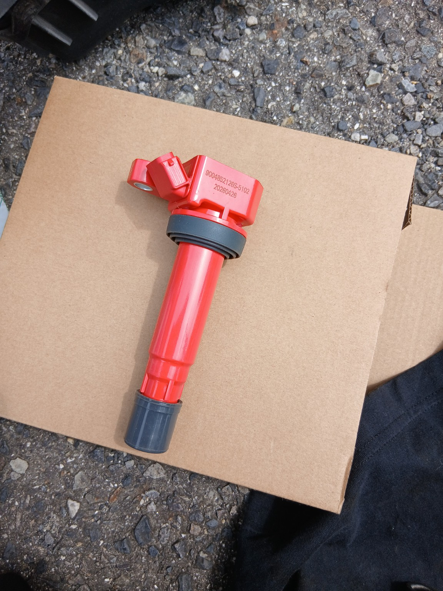
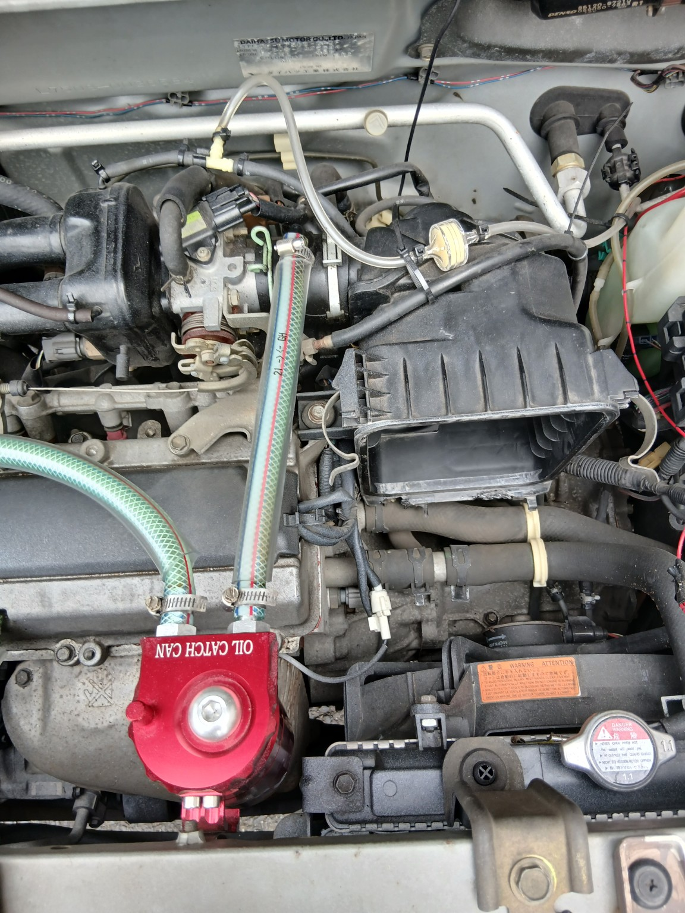
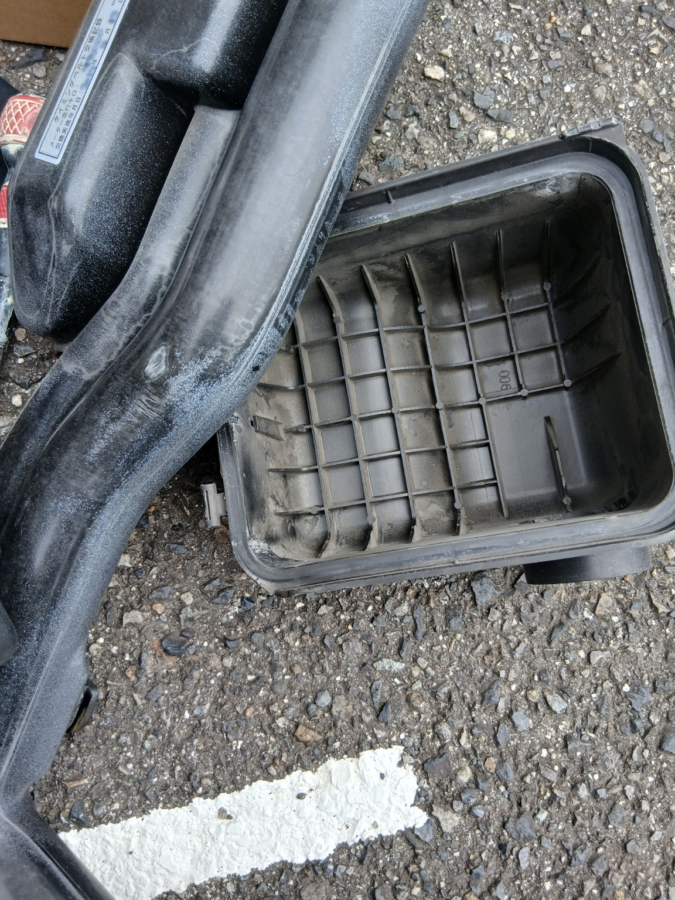
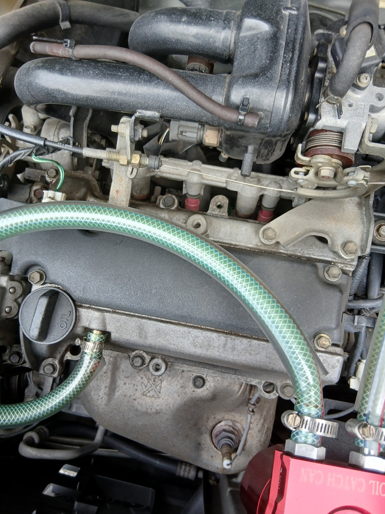
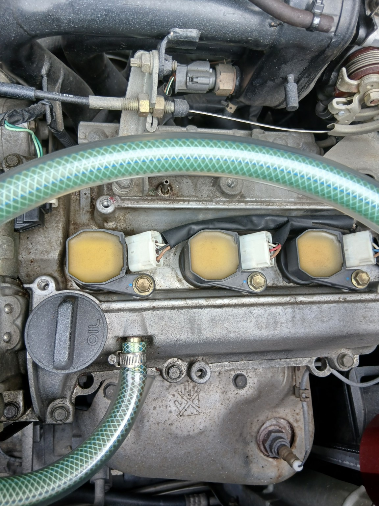
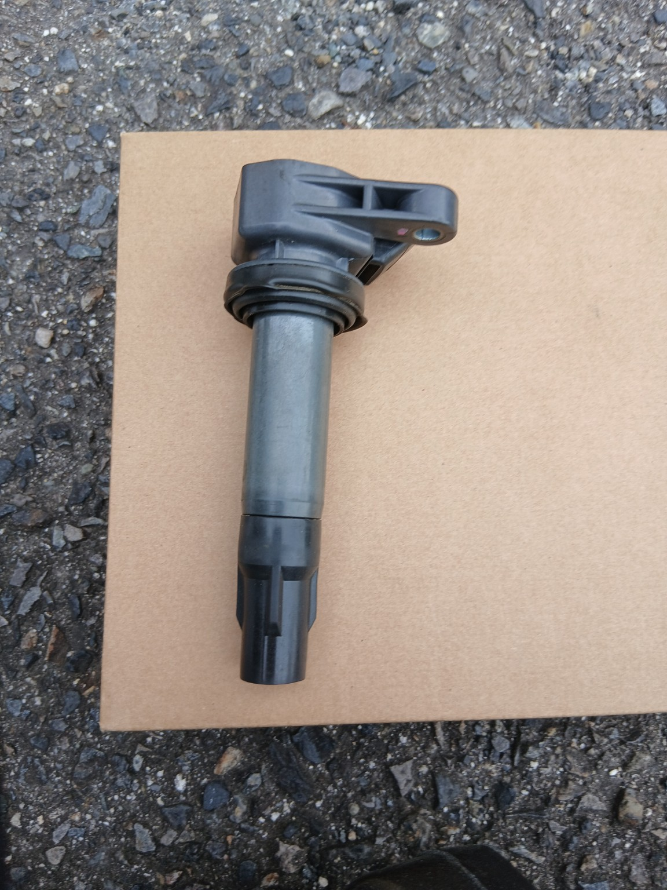
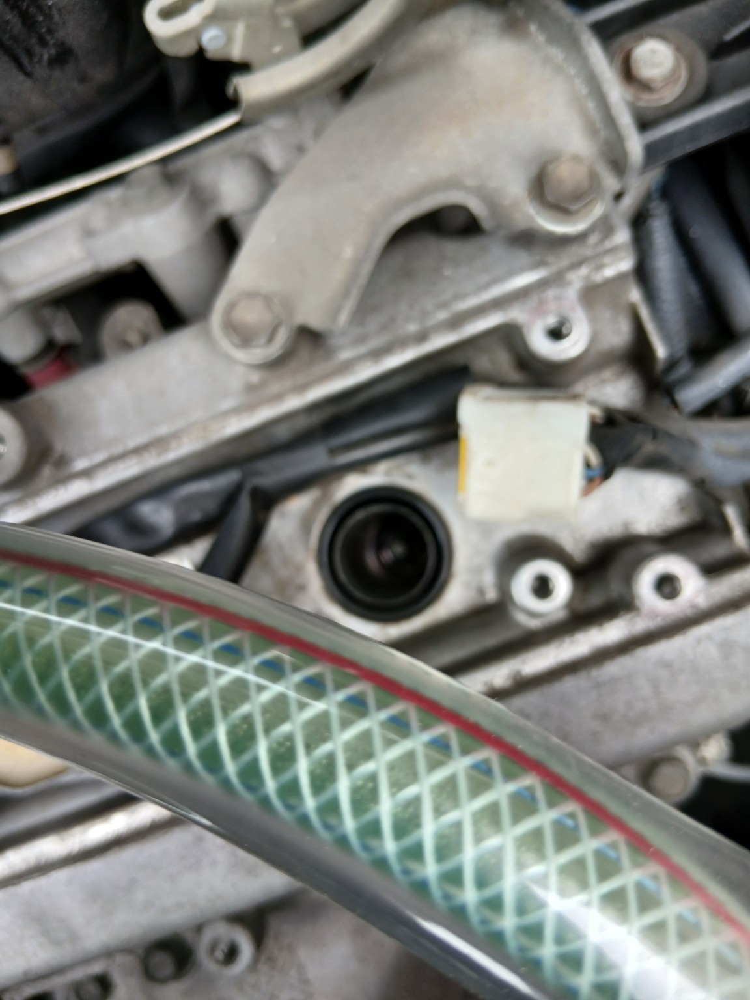
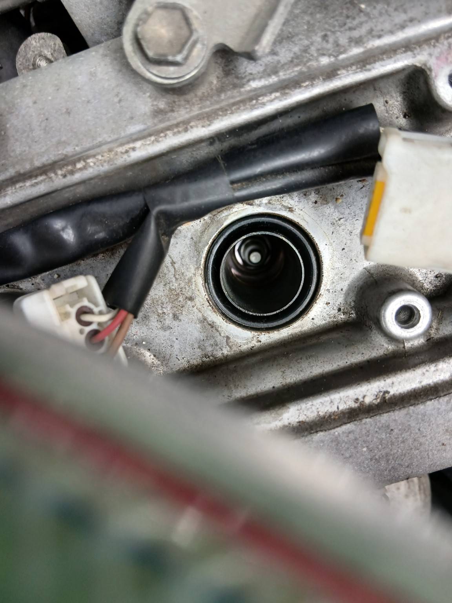
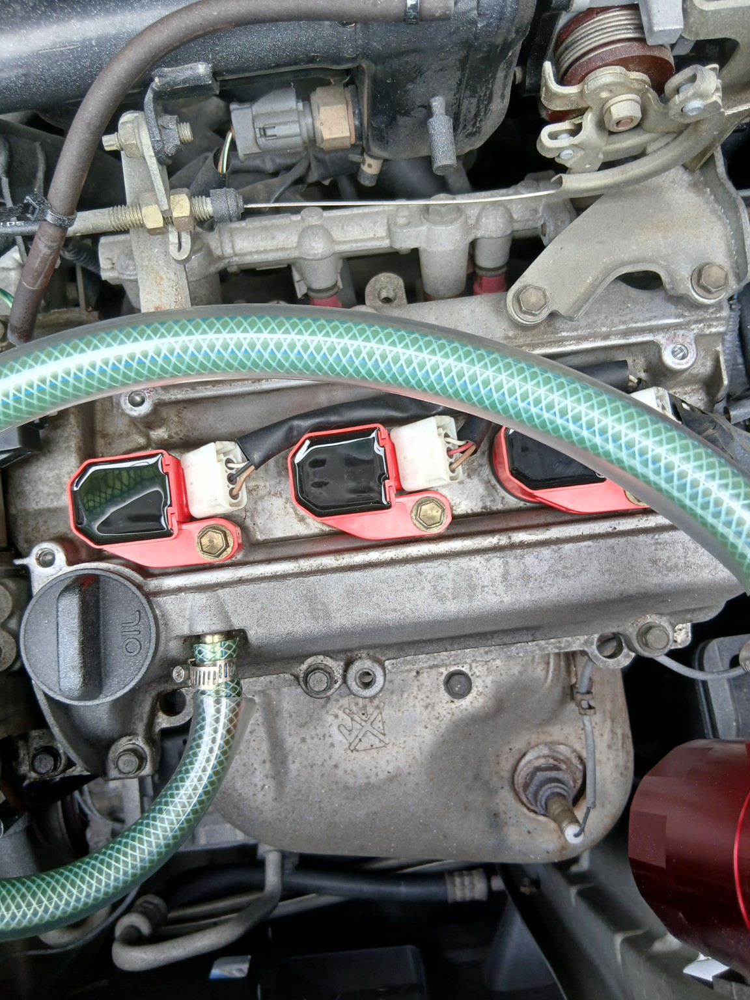

① エアクリーナー周辺を取り外す
② イグニッションコイルを取り外す
③ スパークプラグを交換する
④ 新しいイグニッションコイルを取り付ける
⑤ エアクリーナーを新品に交換して元に戻す
今回交換するもの
ダイハツ ネイキッド L750Sのメンテナンスです。今回はプラグとイグニッションコイルを交換し、せっかくエアクリーナーボックスを外すのでエアクリーナーも新品にしました。


1エアクリーナー周辺を取り外す
まずは作業スペースを確保するため、エアクリーナー周辺を外していきます。ホースや配線を無理に引っ張らないように確認しながら作業しました。


2イグニッションコイルを取り外す
エアクリーナー周辺を外すと、3本のイグニッションコイルが見えてきます。コネクターを外し、固定ボルトを外してコイルを上へ引き抜きます。


3スパークプラグを交換
コイルを抜くと、その奥にスパークプラグがあります。プラグレンチを使って古いプラグを外し、新しいプラグへ交換します。


4新品イグニッションコイルを取り付け
プラグ交換が終わったら、新しいイグニッションコイルを取り付けます。3本とも奥までしっかり差し込み、固定ボルトとコネクターを元通りにします。


5エアクリーナーも新品に交換
最後にエアクリーナーを新品へ交換し、エアクリーナーボックスや外したホース類を元に戻します。コネクターやホースの付け忘れがないか、ひと通り確認して作業完了です。
今回はプラグ・イグニッションコイル・エアクリーナーをまとめて交換しました。普段は見えにくい部分まで確認できるので、同時に作業するとメンテナンスした実感があります。
交換完了！
すべて元に戻したらエンジンを始動して、アイドリングや異音などに問題がないか確認します。これで今回のリフレッシュ作業は完了です。
古い車だからこそ、少しずつ自分で手を入れて状態を確認しながら楽しんでいきます。今回もDIYで交換しました！